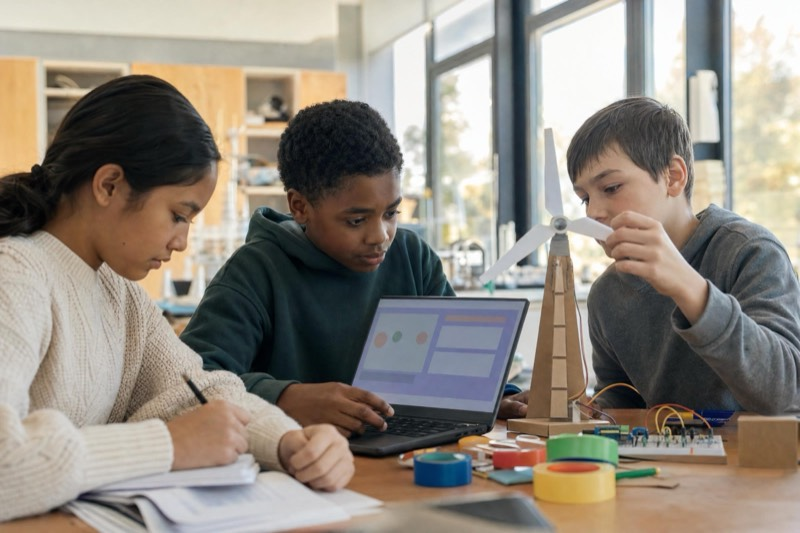
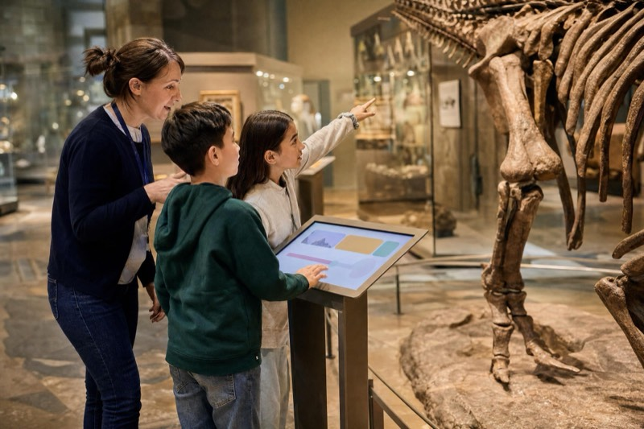
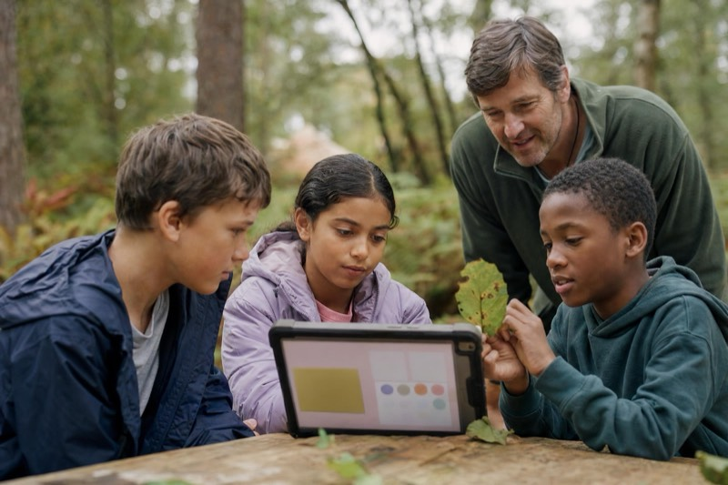
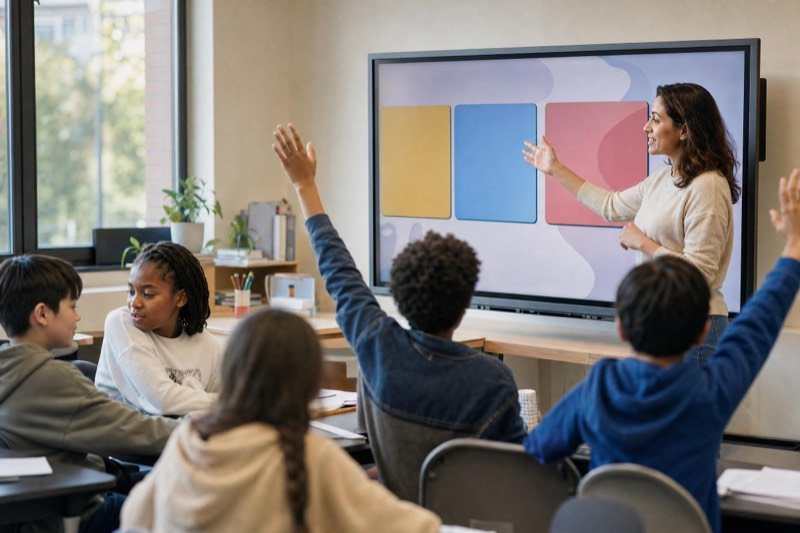

Worlds to build and change
Children change a world and watch what happens. Cause and effect becomes something they can see.
Eco Town, Eco AI ExplorerWhite-label AI learning for organisations that work with children
Launch safe, interactive AI-learning games for the children you already serve. We combine a reusable learning platform with your brand, content and educational goals, then help your team deliver it at scale.
Age-appropriate experiences for school-age children, run by your own facilitators.
The problem partners face
In conversations with organisations that teach and host children, the same six problems kept coming up.
A general-purpose chatbot creates safety and governance concerns that many organisations cannot accept.
Laptops, browsers, filters and firewalls change from one school or venue to the next.
Great facilitators should be able to run a session well without becoming AI experts first.
An off-the-shelf course rarely reflects your subject, your audience or your brand.
An empty prompt box overwhelms younger children, and nobody wants to wait minutes for a result.
If children are not enjoying it, the learning does not land.
Can you write my essay for me?
Of course! Here is a 1,000-word essay on…
What’s the best phone to buy?
Tell me everything about volcanoes
Any question, any answer, and a wait for each one.
MissionKeep the lights on after dark
AKeep the lights on all night
BUse only wind and sun
CAdd a battery
Instant result: the lights go out at 18:00
A clear mission, bounded choices and an instant result.
How Delta Learning works
Every experience runs on the same loop. Try it: a simplified mission from our Eco Town prototype.
Lab GuidePrototype AI · scripted · can be wrong
Mission
Your town on the windy hill has 6 wind turbines and solar panels on 20 roofs. Now keep the lights on after dark.
Pick a card to tell the AI helper what to do.
729possible paths through each world in the full prototype: six stages, with three cards at each. There is no single right answer.
People0
Planet0
Another child could keep a different plan and explain why. Different choices create different outcomes.
Pick a card to run the test day
Numbers are simplified for the web. In our AI Lab prototype, each stage deals three cards, one of them vague, so the AI has to guess. The AI helper is a scripted simulation, so no live AI model is involved.
Designed from the games children know
We looked at the games that fill UK classrooms, after-school clubs and holiday camps, then used their most familiar patterns to practise judgement.
Children change a world and watch what happens. Cause and effect becomes something they can see.
Eco Town, Eco AI ExplorerA group argues, votes and commits to a decision, then tests it together.
Mission AIProgress children recognise straight away, with rewards for testing and improving as well as for getting it right.
Every experienceSpecies, artefacts and photos to find. What they collect becomes a record of how they reached an answer.
AI Time Traveller, Eco AI ExplorerInstructions built from blocks that children can rearrange, test and fix.
AI Inventor LabAn AI helper that guesses, explains and is sometimes wrong, so children learn to check it.
Every experience46%Creative and building games are the most played type of game among UK children aged 3 to 12. Puzzles and quizzes come next, at 36%.Ofcom, Children and Parents: Media Use and Attitudes Report, May 2025. Share of children aged 3 to 12 who play games.
We borrow the patterns children know. Our prototypes have no adverts, no chat between players and nothing to buy.
One platform, many experiences
The learning model stays the same. The story, objectives, branding and experience become yours.
Children design a pond, balance wildlife, visitors and resources, and learn to challenge assumptions.
Output: a habitat plan
Children program a rover, refine instructions, test on sand and check what its camera claims to see.
Output: a rover spec sheet
Teams vote on a route against the clock, see what the AI assumed, and plan again before sunset.
Output: an expedition map
Children test the AI’s version of the past against evidence from the venue’s own collection.
Output: a traveller’s diary
All four brands are fictional examples. The engine is real and running in our prototypes.
Start with one experience and add new worlds or modules over time.
Use cases
You already have the audience, the setting and the trust. We help you add an AI-learning experience that fits them.


Coding and computing franchises, enrichment providers, tutoring organisations, after-school operators, curriculum providers
You could launchA licensed AI module that runs the same way in every franchise, club and classroom.
Holiday camps, activity-centre networks, youth programmes, residential centres
You could launchA themed AI challenge that fits a camp session and that any trained leader can run.

Museums, science centres, environmental centres, attractions, educational visitor experiences
You could launchA mission built from your collection or site, for school visits and family days.

Schools, academy groups, educational trusts, school clubs
You could launchAI learning that is easier to govern than an open chatbot, delivered the same way across your schools.
Charities, libraries, community programmes, clubs
You could launchAn AI-learning experience in your name, for the children you already reach.
Discuss your use casePhotographs are illustrative and do not show real deployments.
Built around human judgement
The system can suggest, assume and respond. Children still decide what to trust, what to change and what to do next.
They see the consequences of their choices, test different paths and explain the thinking behind the result. These habits stay useful whichever AI tools children meet later, and they matter more than learning one product that may look very different in two years.

Safe and practical to deploy
Children practise the behaviours behind working with AI without unrestricted access to a general-purpose AI model. You keep control of content, pace, privacy and delivery.

Children choose from prompt cards and work with a guided AI helper. Its responses are designed and tested in advance, and no open chatbot is involved.
We design around the browsers and devices you already have, and check them before a pilot. Our current prototypes are tested in desktop Chrome and Safari.
No child accounts and no individual AI logins. Our prototypes keep progress in the browser on the device being used.
Pre-built interactions respond straight away, so children are not waiting on a generative model.
Non-specialist facilitators get session plans, on-screen prompts and training before they run anything.
Firewalls, connectivity, safeguarding and data needs are agreed during design. Offline-capable experiences can be built where the setting needs them.
Where we are today: our experiences are prototypes in development. We confirm the technical set-up, data handling and safeguarding approach with each partner before any pilot.
What partners get
A working product and the support around it, licensed for the sites, learners or network you agree.


Training covers how to teach each session as well as how to use the software, and it ends with every instructor running a complete session.
Every session plan coversTimingObjectivesInstructor promptsExpected outcomesCommon problemsSupport and extension challengesTechnical checklist
Ways to work together
Pick the route that matches your goals, timeline and network. Pricing depends on your sites, learners and how much we adapt.

Start with an existing Delta Learning experience in your brand, set up for the way you deliver.
Best for partners who want a quick route to market
Take an existing learning mechanic or world and adapt the theme, objectives, activities, branding or curriculum.
Best for organisations with a clear subject area or audience
Design a new module with us around your educational goals, content, brand and delivery model.
Best for strategic partners and networks
Talk to us about licensing.Licences can combine an annual platform licence, learner or usage-based licensing, a network or white-label licence, setup and customisation, and bespoke module development.
Discuss your use caseHow we work · from pilot to scale
Nobody commits blindly. We build one experience, test it with real learners and facilitators, then improve it before wider rollout. After each stage we decide together whether to carry on, change the plan or stop.
Understand the audience, objectives, delivery setting, instructors, devices and commercial model.
A shared briefThen we askDo we understand the goals and the setting?
Define the child’s mission, learning outcomes, interaction model and success criteria.
An experience designThen we askDo we agree on the learning model and priorities?
Create the branded experience, lesson materials and facilitator support.
A pilot-ready experienceThen we askIs it ready for a controlled pilot?
Test with real children and instructors in a controlled setting.
Evidence against the criteriaThen we askWhat must change before wider rollout?
Use the evidence and feedback to refine the experience.
A release for rolloutThen we askDid the changes do what we expected?
License it across the agreed network, sites, cohorts or learner volumes.
A licensed rolloutThen we askIs the operating model ready to scale further?
Small pilotEvidenceRefinementNetwork rollout
We agree the targets with you before the pilot starts.
About
DeltaOps designs AI training and workflow systems for organisations. Delta Learning applies that experience to how children learn to work with AI.
We started with hands-on AI workshops for children. Talking with organisations that already teach and host children showed us a bigger need: a safe experience in their own brand that their own teams could run, at every site. The DeltaOps team has also trained more than 250 executives and SME founders to use AI at work.
Visit deltaops.consultingThe four worlds of our AI Lab prototype, plus Kick Lab and Beat Lab.
 EnergyEco Town
EnergyEco Town WaterRiver Town
WaterRiver Town FoodGrow Lab
FoodGrow Lab SpaceMoon Base
SpaceMoon Base SportKick Lab
SportKick Lab MusicBeat Lab
MusicBeat Lab

Start a conversation
Tell us who you work with, what you already teach or deliver, and where AI could add value. We will explore whether an existing experience fits or whether it makes sense to create something new.
Or email us directly at hello@deltatraining.co
What happens next
You do not need a finished brief. A rough idea of who you work with is enough to start.